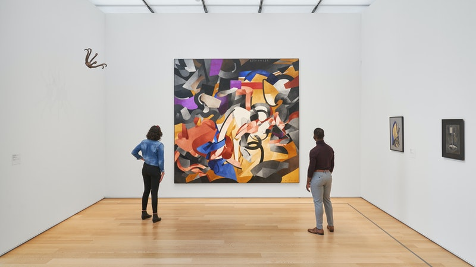
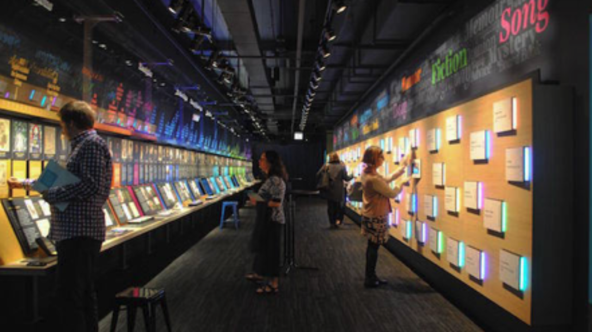

Chicago Museums
Chicago Sports Museum

The Chicago Sports Museum is a 23,000-square-foot museum located along the Magnificent Mile at the Water Tower Place mall in Chicago.
Phone Number: (312) 202-0500
Website: chicagosportsmuseum.com
835 N Michigan Ave, Chicago, IL 60611
The Art Institute of Chicago
The Art Institute of Chicago in Chicago's Grant Park, founded in 1879, is one of the oldest and largest art museums in the United States. Recognized for its curatorial efforts and popularity among visitors, the museum hosts approximately 1.5 million people annually.
Phone Number: (312) 443-3600
Website: artic.edu
111 S Michigan Ave, Chicago, IL 60603
American Writers Museum
The American Writers Museum is a museum of American Literature and writing that opened in Chicago in May 2017. The museum was designed by Amaze Design of Boston. The American museum was inspired by the Dublin Writers Museum.
Phone Number: (312) 374-8790
Website: americanwritersmuseum.org
180 Michigan Ave, Chicago, IL 60601
Chicago Children's Museum

The Chicago Children's Museum is located at Navy Pier in Chicago, Illinois. It was founded in 1982 by The Junior League of Chicago who were responding to programming cutbacks in the Chicago Public Schools.
Phone Number: (312) 527-1000
Website: chicagochildrensmuseum.org
700 E Grand Ave, Chicago, IL 60611